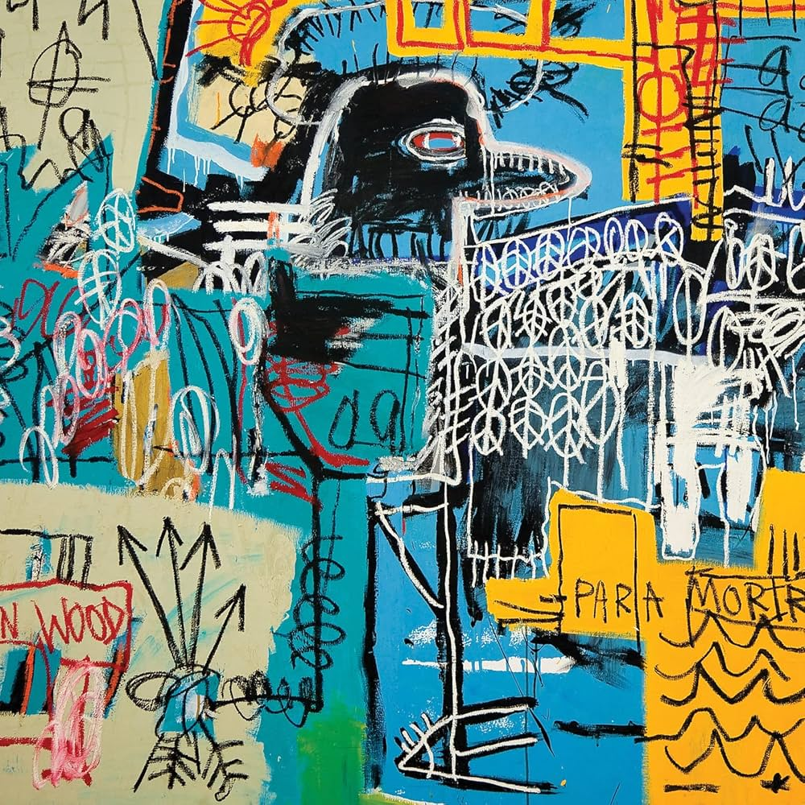
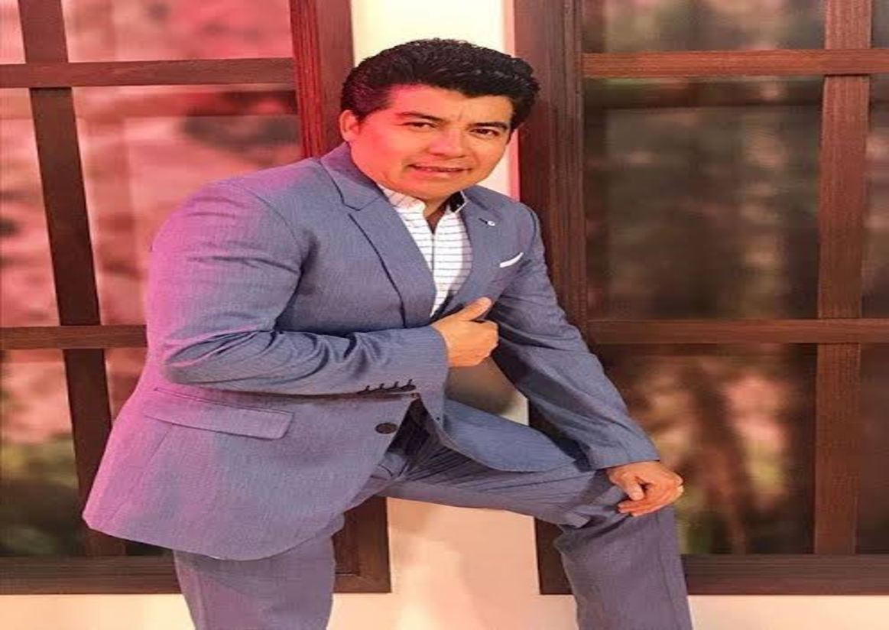

Página dedicada a la música

Esta página fue creada con el fin de brindar información sobre temas musicales o para personas que buscan
explorar el mundo de la música. Se busca informar sobre canciones, artistas, conciertos y más.
Seccion de noticias

Noticia
Daniel, me estás matando
La banda "Daniel, me estás matando", Saca nuevo tema oficial.
Conciertos en Ecuador
- Concierto de Juan Fernando Velasco - 25 de enero, 2025
- Las Huellas de mi Alma Tour - 1 de febrero, 2025
- Mago de Oz y Avalanch - 30 de enero y 1 de febrero, 2025
- Ha-Ash: Haashville Tour - 30 de enero. 2025
- Alejandro Lerner, junto a Marques - 13 de febrero, 2025
Artistas Ecuatorianos
Gerardo Morán
Es un cantante de tecnocumbia ecuatoriano.
También conocido como El Más Querido.Don Medardo y sus Players
Es una orquesta ecuatoriana de cumbia, formada en el año 1967 por Medardo Luzuriaga.
Un joven con un estilo único y una gran proyección.Julio Jaramillo
Fue un cantante y compositor ecuatoriano. Se especializó en los géneros de bolero, pasillos, vals, y tango.
Reconocidos por su musica.Paulina Tamayo
Conocida también como “La Grande del Ecuador”, es cantautora de música nacional.
Se destaca en los géneros musicales como Albazo, Pasillo, Pasacalles, etc.